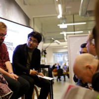

Paaila Technology (2016-)
Co-founded a robotics and AI company in 2016 with classmates. Headed different stages of company from development to management at different phases of time.

I am an AI engineer and co-founder at Paaila Technology. I have been a part of tech startups right after graduating from IOE, Pulchowk Campus as an Electronics and Communication Engineer in 2016. With Paaila Technology and Naulo robotics restaurant, our team of Pulchowk College graduates has demonstrated the possibility of technological advancement in fields like robotics and AI in Nepal. I am currently studying Masters in Information Engineering at IOE Pulchowk Campus with core focus on machine learning. I am highly interested in AI for health care, startup culture, team development, and project management. I often represent my company in exhibitions and events for talk shows and presentations. I deliver guest lectures to students of various colleges on themes of startup and self-employment.
Master's degree in Information Engineering (2019-2021). Subjects of my interests are: Machine Learning, Big Data, Neural Network and Information Management System.
Graduated as Electronics and Communication Engineer in 2016. Published a paper on Final Year Project entitled “Voice Command Based Object Recognizing Robot Using Speech and Image Feature Extraction” on researchgate. Member of students association, LOCUS that organized a national technical exhibition.
Co-founded a robotics and AI company in 2016 with classmates. Headed different stages of company from development to management at different phases of time.
Co-founded the first complete digital robotics restaurant in Nepal with the team of Paaila Technology. Oversaw the design and development of the restaurant and associated technology.
Provided mentorship to the top 10 teams of the 2019 Hult Prize at IOE on business and technical aspects of their idea.
Worked as a technical member in the LOCUS 2016 team that successfully organized the 13th National Technological Festival. Managed and coordinated all the technical aspects of the main event and pre-events. Supervised and directed a team of designers and animation developers.
AI for Medical Treatment, Medical Diagnosis and Medical Prognosis by deeplearning.ai on Coursera. Certificate earned at June, 2020
Deep Learning Specialization by deeplearning.ai on Coursera. Certificate earned at June 2020. Courses include: Neural Networks and Deep Learning, Improving Deep Neural Networks: Hyperparameter tuning, Regularization and Optimization, Structuring Machine Learning Projects, Convolutional Neural Networks and Sequence Models.
IBM AI Engineering Specialization by IBM on Coursera. Certificate earned at June 2020. Courses include: Machine Learning with Python, Scalable Machine Learning on Big Data using Apache Spark, Introduction to Deep Learning and Neural Networks with Keras, Deep Neural Networks with PyTorch, Building Deep Learning Models with Tensorflow and AI Capstone Project with Deep Learning.
IBM Data Science Specialization by IBM on Coursera. Certificate earned at May 2020. Courses include: What is Data Science?, Tools for Data Science, Data Science Methodology, Python for Data Science and AI, Databases and SQL for Data Science, Data Analysis with Python, Data Visualization with Python, Machine Learning with Python and Applied Data Science Capstone.
Project Management Principles and Practices Specialization by University of California, Irvine-The Paul Merage School of Business on Coursera. Certificate earned at May 2020
Introduction to Big Data, Big Data Modeling and Management Systems, Big Data Integration and Processing, Machine Learning with Big Data, and Graph Analytics for Big Data by University of California San Diego on Coursera. Certificates earned at April-May 2020.
Mathematics for Machine Learning: Linear Algebra and Multivariate Calculus by Imperial College London on Coursera. Certificate earned at April 2020.
TensorFlow for Artificial Intelligence, Machine Learning, and Deep Learning by deeplearning.ai on Coursera. Certificate earned at August 2019
Business Strategy Specialization by the Darden School of Business | University of Virginia on Coursera. Certificate earned at October 2019
Workshop on “Mobile Application Development and Entrepreneurship” Organized by: by Dept. of Electronics and Computer Engineering, Pulchowk campus in coordination with Young Innovations Pvt. Ltd., Immune Nepal Pvt. Ltd., Microsoft Innovation Centre Nepal, ebPearls and digilokta PL. on Jan 1st 2014-Jan 8th 2014
Paaila Technology has won the Most Creative Business Cup Award-2018, Nepal and will represent Team Nepal in the global finals happening in Copenhagen, Denmark.
After winning CBC-2018, Paaila Technology team headed to Denmark to pitch their ideas and innovation.
National ICT Innovation Award by Ministry of Communication and Information Technology for Paaila Technology, 2019
Most Creative Business of Nepal by Antarprena. Represented Team Nepal at global finals in Copenhagen, Denmark 2018.
Best Startup of Nepal by ICT Magazine, 2017
Published a paper on Final Year Project entitled “Voice Command Based Object Recognizing Robot Using Speech and Image Feature Extraction” on Researchgate, 2016.
Winner of Object Oriented Programming Competition by FlipKarma at Pulchowk Campus, 2014
Winner of Intra-college essay competition on the topic “Education Right or Commodity?” at Pulchowk Campus, 2013
Grabbed third position at national level quiz competition, Quizmania broadcasted on Kantipur TV, 2012
Grabbed second position at inter-college oratory competition organized at the 25th anniversary of Balkumari College, 2011